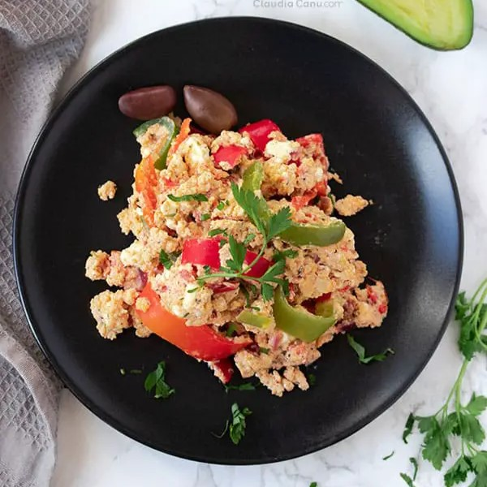

Mish Mash is a very easy-to-prepare traditional Bulgarian dish that makes a tasty inexpensive Keto-friendly and gluten-free meal. Easy to digest and nourishing, it’s perfect for brunch or light dinner. Back home, the dish is prepared typically in summer, with fresh vegetables, eggs and feta cheese.
Meal prep time : 30 minutes
Servings : 4